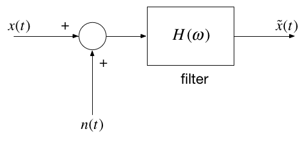
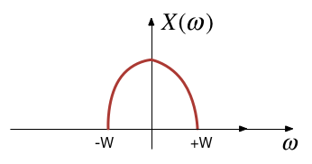
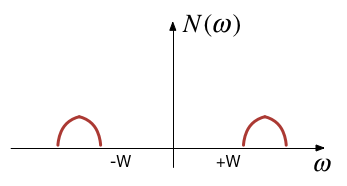
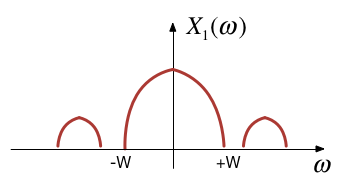
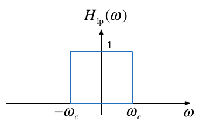

Worksheet 15¶
To accompany Section 5.4 Introduction to Filters¶
This worksheet can be downloaded as a PDF file. We will step through this worksheet in class.
An annotatable copy of the notes for this presentation will be distributed before the second class meeting as Worksheet 15 in the Week 7: Classroom Activities section of the Canvas site. I will also distribute a copy to your personal Worksheets section of the OneNote Class Notebook so that you can add your own notes using OneNote.
You are expected to have at least watched the video presentation of Chapter 5.4 of the notes before coming to class. If you haven’t watch it afterwards!
After class, the lecture recording and the annotated version of the worksheets will be made available through Canvas.We will step through this worksheet in class.
Frequency Selective Filters¶
An ideal frequency-selective filter is a system that let’s the frequency components of a signal through undistorted while frequency components at other components are completely cut off.
The range of frequencies which are let through belong to the pass Band
The range of frequencies which are cut-off by the filter are called the stopband
A typical scenario where filtering is needed is when noise \(n(t)\) is added to a signal \(x(t)\) but that signal has most of its energy outside the bandwidth of a signal.
Typical filtering problem¶
Signal¶
Out-of Bandwidth Noise¶
Signal plus Noise¶
Filtering¶

Motivating example¶
See the video and script on Canvas Week 7.
Ideal Low-Pass Filter (LPF)¶
An ideal low pass filter cuts-off frequencies higher than its cutoff frequency, \(\omega_c\).
Frequency response of a LPF¶
Impulse response¶
Filtering is Convolution¶
The output of an LTI system with impulse response
subject to an input signal
is given by
Issues with the “ideal” filter¶
This is the step response:

(reproduced from Boulet Fig. 5.23 p. 205)
Ripples in the impulse resonse would be undesireable, and because the impulse response is non-causal it cannot actually be implemented.
Butterworth low-pass filter¶
N-th Order Butterworth Filter
Remarks
DC gain is
\[|H_B(j0)|=1\]Attenuation at the cut-off frequency is
\[|H_B(j\omega_c)|=1/\sqrt{2}\]for any \(N\)
More about the Butterworth filter: Wikipedia Article
Example 5: Second-order BW Filter¶
The second-order butterworth Filter is defined by is Characteristic Equation (CE):
Calculate the roots of \(p(s)\) (the poles of the filter transfer function) in both Cartesian and polar form.
Note: This has the same characteristic as a control system with damping ratio \(\zeta = 1/\sqrt{2}\) and \(\omega_n = \omega_c\)!
Solution to example 5¶
Example 6¶
Derive the differential equation relating the input \(x(t)\) to output \(y(t)\) of the 2nd-Order Butterworth Low-Pass Filter with cutoff frequency \(\omega_c\).
Solution to example 6¶
Example 7¶
Determine the frequency response \(H_B(\omega)=Y(\omega)/X(\omega)\)
Solution to example 7¶
Magnitude of frequency response of a 2nd-order Butterworth Filter¶
wc = 100;
Transfer function
H = tf(wc^2,[1, wc*sqrt(2), wc^2])
Magnitude frequency response
w = -400:400;
mHlp = 1./(sqrt(1 + (w./wc).^4));
plot(w,mHlp)
grid
ylabel('|H_B(j\omega)|')
title('Magnitude Frequency Response for 2nd-Order LP Butterworth Filter (\omega_c = 100 rad/s)')
xlabel('Radian Frequency \omega [rad/s]')
text(100,0.1,'\omega_c')
text(-100,0.1,'-\omega_c')
hold on
plot([-400,-100,-100,100,100,400],[0,0,1,1,0,0],'r:')
hold off
Bode plot
bode(H)
grid
title('Bode-plot of Butterworth 2nd-Order Butterworth Low Pass Filter')
Example 8¶
Determine the impulse and step response of a butterworth low-pass filter.
You will find this Fourier transform pair useful:
Solution to example 8¶
Impulse response
impulse(H,0.1)
grid
title('Impulse Response of 2nd-Order Butterworth Low Pass Filter')
Step response
step(H,0.1)
title('Step Response of Butterworth 2nd-Order Butterworth Low Pass Filter')
grid
text(0.008,1,'s_B(t) for \omega_c = 100 rad/s')
High-pass filter (HPF)¶
An ideal highpass filter cuts-off frequencies lower than its cutoff frequency, \(\omega_c\).
Frequency response for HPF¶

Responses¶
Frequency response
Impulse response
Example 9¶
Determine the frequency response of a 2nd-order butterworth highpass filter
Solution to example 9¶
Magnitude frequency response
w = -400:400;
plot(w,1-mHlp)
grid
ylabel('|H_B(j\omega)|')
title('Magnitude Frequency Response for 2nd-Order HP Butterworth Filter (\omega_c = 100 rad/s)')
xlabel('Radian Frequency \omega [rad/s]')
text(100,0.9,'\omega_c')
text(-100,0.9,'-\omega_c')
hold on
plot([-400,-100,-100,100,100,400],[0,0,1,1,0,0],'r:')
hold off
High-pass filter
Hhp = 1 - H
bode(Hhp)
grid
title('Bode-plot of Butterworth 2nd-Order Butterworth High Pass Filter')
Band-pass filter (BPF)¶
An ideal bandpass filter cuts-off frequencies lower than its first cutoff frequency \(\omega_{c1}\), and higher than its second cutoff frequency \(\omega_{c2}\).
Frequency response of a BPF¶

Bandpass filter design¶
A bandpass filter can be obtained by multiplying the frequency responses of a lowpass filter by a highpass filter.
The highpass filter should have cut-off frequency of \(\omega_{c1}\)
The lowpass filter should have cut-off frequency of \(\omega_{c2}\)
Solutions¶
Solutions to Examples 5-9 are captured as a PenCast which you will find attached to the Worked Solutions section of the Week 7 Section of the OneNote Class Notebook or here filters2.pdf